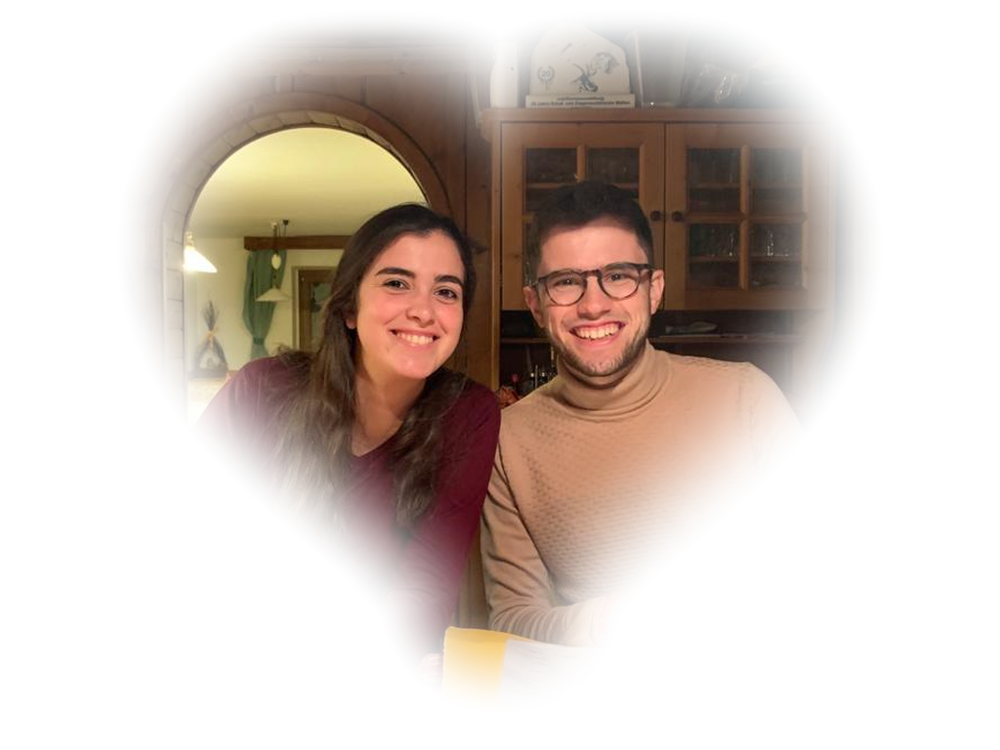

Il programma della giornata
Chiesa di San Sebastiano, Thiene
Pranzo nuziale al Ristorante da Beppino
Brindisi e taglio della torta nuziale.
Per festeggiare e concludere insieme la serata.
Se volete, il regalo più gradito per rendere indimenticabile la nostra luna di miele.
I momenti più belli si vivono insieme, uno scatto li trasforma in ricordi senza tempo.
Nei giorni successivi al matrimonio riceverete un link con le foto ed i ricordi del giorno condiviso con voi.
Ci farebbe inoltre immenso piacere se voleste condividere con noi e con gli altri invitati gli scatti ed i video della festa tramite un link che vi condivideremo qualche giorno prima della festa!